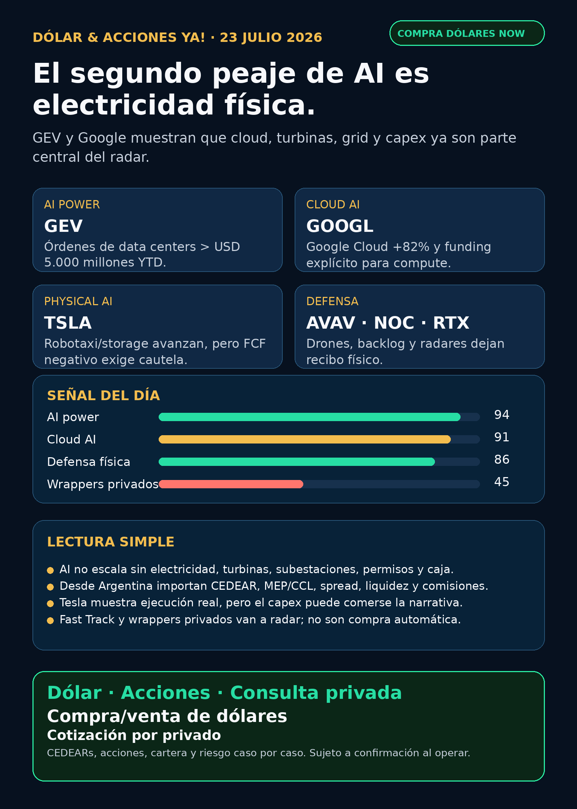

AI power: electricidad, cloud y mundo físico.
GE Vernova y Alphabet muestran que la AI necesita grid, turbinas, data centers y financiación; Tesla y defensa suman señales con riesgo.
Texto WhatsApp
Placa del día

Dólar & Acciones YA — 23/07
Fecha de edición: 2026-07-23. Research educativo para Argentina. No es recomendación personalizada de compra ni de venta.
Lectura simple del día
La señal más fuerte de hoy es física: la inteligencia artificial no escala sólo con software. Escala con cloud, electricidad, turbinas, subestaciones, data centers, financiamiento y permisos. GE Vernova mostró órdenes enormes ligadas a data centers; Alphabet mostró que Google Cloud crece fuerte por AI y que necesita financiar más infraestructura; Tesla mostró avance real en robotaxi/energía, pero también caja negativa por capex; y defensa volvió a aparecer con contratos y backlog, no con humo.
Para una persona en Argentina, la lectura práctica es otra capa más: una gran empresa global puede ser excelente, pero eso no significa que sea buena inversión al precio actual, ni buen instrumento local, ni buen tamaño dentro de una cartera. Antes de mover plata hay que mirar CEDEAR o acción directa, dólar MEP/CCL, liquidez, spread, comisiones, horizonte y riesgo.
Contexto dólar público usado como referencia educativa, no como cotización de ejecución: BlueLytics marcó oficial vendedor $1.502 y blue vendedor $1.555 actualizado 2026-07-23 08:45 -03. CriptoYa marcó oficial ask $1.505, blue ask $1.555, USDT ask $1.578,18 a 2026-07-23 08:46 -03; MEP AL30 $1.507,89 y CCL AL30 $1.533,41 con timestamp de cierre 2026-07-22 16:59 -03. Para operar de verdad se confirma en broker vivo.
Ordenado por valor educativo y fuerza de señal de radar, no por recomendación de compra.
Tesis central
El trade de AI se está abriendo en tres direcciones: infraestructura eléctrica, hyperscalers que monetizan y financian compute, y mundo físico —autos autónomos, defensa, drones, radares, data centers—. En criollo: AI no es sólo “comprar chips”. Hay un segundo peaje que es electricidad física, y un tercer peaje que es ejecución real: permisos, caja, backlog, supply chain y márgenes.
Ranking educativo por calidad de señal / moat
1) GE Vernova (GEV) — AI power / electrificación / generación
- Qué pasó: GE Vernova reportó Q2 2026 y elevó guidance.
- Datos clave: órdenes por USD 24.200 millones (+88% orgánico), revenue USD 11.100 millones (+22%), adjusted EBITDA USD 1.200 millones, FCF USD 5.100 millones, backlog total USD 176.000 millones. En Gas Power, equipment backlog + slot reservations pasó de 100 GW a 116 GW y espera al menos 125 GW a fin de 2026. En Electrification, las órdenes de data centers ya superan USD 5.000 millones en el año, más del doble de todo 2025.
- Fuente primaria: SEC 8-K EX-99 — https://www.sec.gov/Archives/edgar/data/1996810/000199681026000147/gevpressrelease2q26.htm
- Lectura en criollo: esto confirma que la AI necesita turbinas, electrificación, grid equipment y capacidad productiva. No es sólo utility ni sólo semis.
- Accionable local Argentina: no verifiqué CEDEAR/liquidez local en esta corrida. Proxy local imperfecto: energéticas argentinas y CEDEARs de infra/semis, pero no reemplazan a
GEV. - Accionable internacional/global:
GEVdirecto; antes de decidir hay que mirar valuación, márgenes, calidad del backlog y ciclo de pedidos. - Estado: señal fortalecida / vigilar.
2) Alphabet (GOOGL / GOOG) — Cloud AI + funding de compute
- Qué pasó: Alphabet reportó Q2 2026.
- Datos clave: revenue consolidado USD 119.800 millones (+24%); Google Cloud USD 24.800 millones (+82%), impulsado por enterprise AI Solutions, AI Infrastructure y core GCP. También informó net proceeds por USD 49.600 millones en equity/preferred/common raise para general corporate purposes, incluyendo capex para escalar AI infrastructure/global compute, más USD 20.300 millones en senior notes.
- Fuente primaria: SEC 8-K EX-99.1 — https://www.sec.gov/Archives/edgar/data/1652044/000165204426000066/googexhibit991q22026.htm
- Lectura en criollo: Google ya no es sólo buscador + Gemini. AI está apareciendo en Cloud, en capex y en necesidad de financiar compute. Eso alimenta semis, energía, data centers, cooling y power hardware.
- Accionable local Argentina: probable vía CEDEAR/USA, pero ratio, liquidez, spread y CCL no fueron verificados esta mañana.
- Accionable internacional/global:
GOOGL/GOOGdirecto; vigilar márgenes, capex y retorno de inversión. - Estado: señal fortalecida / vigilar.
3) Tesla (TSLA) — autonomy + energy storage, pero con costo de capex
- Qué pasó: Tesla reportó Q2 2026.
- Datos clave: entregas Q2 480.126 (+25% YoY), revenue trailing 12 months por encima de USD 100.000 millones, energy storage tuvo su segundo mejor trimestre de deployments, Cybercab empezó producción en Texas y robotaxi está live en 7 major metros. El freno: FCF negativo de USD 1.092 millones por capex de USD 5.789 millones.
- Fuente primaria: SEC 8-K EX-99.1 — https://www.sec.gov/Archives/edgar/data/1318605/000162828026049213/exhibit991.htm
- Lectura en criollo: Tesla tiene señales reales en autos, almacenamiento y autonomía, pero no alcanza con la épica robotaxi. Hay que mirar caja, capex, permisos, seguridad y ejecución.
- Accionable local Argentina: suele tener vía global/CEDEAR, pero precio, ratio y spread no fueron verificados.
- Estado: vigilar / tesis fortalecida con riesgo operativo-financiero alto.
4) Defensa y guerra física — AVAV, NOC, RTX
AVAV: AeroVironment anunció contrato U.S. Army por USD 117,3 millones para 82 P550 eVTOL UAS. Fuente primaria: https://www.avinc.com/2026/07/20/av-awarded-117-3-million-u-s-army-production-contract-for-p550/NOC: Northrop Grumman reportó net awards USD 20.000 millones y backlog récord USD 105.000 millones. Fuente primaria SEC: https://www.sec.gov/Archives/edgar/data/1133421/000113342126000033/noc-06302026xearningsrelea.htmRTX: Raytheon/RTX anunció extensión SPY-6 por USD 1.800 millones para U.S. Navy, con opciones hasta USD 3.300 millones. La fuente primaria renderizó en browser; el gate completo quedó limitado, así que se usa como señal factual con caveat. URL: https://www.rtx.com/news/news-center/2026/07/21/rtxs-raytheon-awarded-1-8-billion-hardware-production-and-sustainment-contract- Lectura en criollo: defensa no es sólo “acciones de guerra”. Hay drones, radares, backlog, producción, sustainment y presupuesto. También hay riesgo geopolítico, valuación e integración.
- Accionable local Argentina: acceso local/CEDEAR no verificado. Global: tickers directos o ETFs tipo defensa/aeroespacial a auditar.
- Estado: señal fortalecida / radar visible.
5) Pharma / biotech — Oncolytics (ONCY)
- Qué pasó: FDA concedió Fast Track Designation a pelareorep en combinación con checkpoint inhibitor para un subtipo avanzado de cáncer anal.
- Fuente primaria SEC: https://www.sec.gov/Archives/edgar/data/1129928/000112992826000045/oncy-20260720.htm
- Lectura en criollo: Fast Track no es aprobación, no es revenue y no es “ya ganó”. Es un carril de interacción regulatoria más rápida. Biotech así puede moverse mucho, pero tiene riesgo binario.
- Accionable local Argentina: no accionable local directo salvo broker global; requiere análisis clínico, caja, runway y probabilidad regulatoria.
- Estado: radar biotech high-risk / no aprobación.
6) Wrappers privados / RVI (RVI) — freno antes del FOMO
- Qué pasó: nuevo Form 4 mostró que Robinhood Markets vendió 22.546 acciones de RVI por aproximadamente USD 598.504, VWAP aproximado USD 26,55, remaining 13.209.706.
- Fuente primaria SEC: https://www.sec.gov/Archives/edgar/data/2085091/000178387926000099/wk-form4_1784753008.xml
- Lectura en criollo: RVI/DXYZ/VCX/SPCX no son “comprá SpaceX/OpenAI/Anthropic fácil”. Son instrumentos con NAV, premium/descuento, sponsor sales, liquidez, restricciones y acceso que hay que auditar.
- Estado: vigilar / riesgo de instrumento.
Watchlist base — seguimiento rápido
RKLB: apareció en discovery un contrato defensa por USD 266 millones, pero sin primaria Rocket Lab/DoD/SEC usable. Estado: señal potencial / auditar antes de publicar fuerte.NVDA: sin filing operativo nuevo, pero sigue el mapa de AI cloud/ecosystem por 13G en Nebius (`NBIS`) de 9,3% beneficial ownership. Estado: ecosistema AI cloud / no revenue inmediato.- `PLTR`: ruido de precio/analistas/Golden Dome; sin contrato o filing primario material nuevo.
- `TSM`: compras chicas de insiders en `2330.TW`; no es catalyst operativo. Moat foundry vigente.
- `MU`: HBM vigente, sin filing material nuevo superior.
- `GOOGL/GOOG`: señal fuerte por Q2, Cloud AI y funding de infrastructure.
- `AAPL`: sin señal primaria nueva. No vender como AI moat automático sin evidencia.
- `HOOD`: sin noticia operativa superior; por
RVI, vigilar sponsor sales y wrappers. TSLA: Q2 verificado: autonomy/storage + FCF negativo por capex.- `ASML`: sin primaria nueva esta noche; regla vigente: ASML sí, all-in no.
- `Gold / GLD / GOLD / B`: instrumento ambiguo. No publicar precio ni tesis hasta confirmar si es ETF oro, Barrick, Berkshire B u otro.
RVI: sponsor sale nueva refuerza gate NAV/premium/liquidez.- `SNDK / CBRS / AVGO`: sin filing nuevo material esta noche; `CBRS` sigue radar por OpenAI/AWS/customer concentration; `AVGO` sigue como carril AI ASIC/networking previo.
Energía y AI power
- GE Vernova es la señal fuerte global del día: generación + electrificación + data centers.
- Alphabet empuja la demanda: Cloud +82% y funding explícito para AI infrastructure/global compute.
- Energía argentina:
PAM/PAMPRincón de Aranda/RIGI yYPFsplit quedaron indexados ayer; no hubo primaria nueva superior esta noche. Igual se mantienen en radar educativo porque Argentina tiene capa propia: petróleo/gas, Vaca Muerta, regulación, riesgo país, liquidez local y CCL. - Power hardware / transformadores: Hitachi Energy/Hitachi (`6501.T`/`HTHIY`), Siemens Energy (`ENR.DE`), HD Hyundai Electric (`267260.KS`), Hyosung Heavy Industries (`298040.KS`), Virginia Transformer y Delta Star revisados. No apareció primaria fresca comparable a
GEV. Mantener lane activo: el segundo peaje de AI incluye transformadores, switchgear, breakers, subestaciones, power semis y lead times. - Nuclear/uranio/data centers: revisado, sin señal nueva más fuerte que Amentum/NERC/NKLR previos.
Pharma / salud
ONCY: Fast Track verificado; high-risk biotech, no aprobación.- `NVO` vs `LLY`: se mantiene guerra legal/comercial GLP-1 de ayer; sin catalyst clínico nuevo verificado esta mañana.
- `NVO`: buyback vigente, señal de capital return, no pipeline.
- `AZN`: discovery sobre Breztri asthma/FDA, pero primaria AstraZeneca US cayó bloqueada y openFDA no quedó usable. No elevar hasta ver FDA/company.
- `MRK`: enlicitide/oral PCSK9 sigue como radar ya indexado; sin señal fresca superior.
- `LLY`: sin aprobación/trial nuevo verificado.
Autonomous mobility / physical AI
TSLA: robotaxi live en 7 major metros, Cybercab producción y energy storage fuerte, pero FCF negativo por capex. Estado: radar de ejecución + riesgo.- Alphabet/Waymo, Uber, Zoox/Amazon y Joby: revisados por discovery sin primaria nueva fuerte comparable esta mañana. No inventar señal.
Space / orbital AI / private markets
RKLB: señal potencial de contrato defensa, pendiente de primaria.- SpaceX/SPCX/Starlink/Starship: discovery de earnings call y política, sin filing/fuente primaria suficiente. Estado: audit-only para claims de precio, lockup o earnings.
RVI, `DXYZ`, `VCX`, `ARKVX`, `AGIX`, `XOVR`, FAPMI/Forge: revisar NAV, holdings, premium, liquidez y acceso antes de hablar de oportunidad. Sin evidencia fresca suficiente salvo sponsor sale de RVI.
Crypto gobernado / rails
No apareció señal nueva superior a Robinhood Chain / Stock Tokens / Agentic Accounts ya indexados. Memecoins y “agentic AI crypto” quedan como ruido educativo hasta auditoría on-chain dura. Nada de casino de tokens.
Red flags / hype para ignorar
- “Fast Track” no es aprobación FDA.
- “Robotaxi live” no borra capex, permisos, safety ni caja.
- “AI power” no significa comprar cualquier utility o hardware al precio que sea.
- RVI/DXYZ/VCX/SPCX no son acceso limpio a privadas sin mirar NAV, premium, sponsor sales y liquidez.
- RKLB contrato defensa y AZN/Breztri quedan pendientes hasta primaria usable.
- Gold/GLD/GOLD/B sigue ambiguo: no hablar de precio hasta saber instrumento exacto.
Próximo paso concreto
- Seguir GE Vernova: backlog quality, márgenes, data-center orders, supply chain y valuation.
- Mirar Alphabet: capex, Cloud backlog, AI infrastructure ROI y financiación.
- Vigilar Tesla con doble lente: execution de autonomy/storage y cash/capex.
- Auditar RKLB defensa y AZN/Breztri con fuente primaria.
- Para Argentina, antes de cualquier decisión: broker vivo, MEP/CCL, CEDEAR disponible, spread, liquidez y comisiones.
Servicio privado
Si querés comprar o vender dólares, invertir en acciones/CEDEARs o pensar una estrategia financiera más personalizada, escribime por privado y lo vemos caso por caso. Cotización sujeta a confirmación al momento de operar.
Disclaimer
Esto es research educativo para decisión humana. No es asesoramiento financiero personalizado ni orden de compra/venta. Cada decisión depende de precio, monto, plazo, liquidez, cartera, impuestos, riesgo y necesidad de caja.
Links
Web oficial: https://simulacion-uno-finanzas.web.app/
Canal WhatsApp: https://whatsapp.com/channel/0029Vb8G9fqGzzKSVUX3hc1S